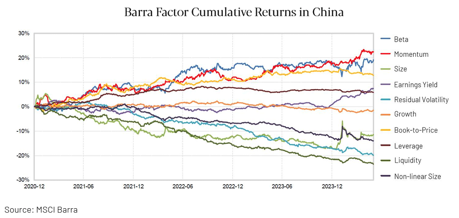
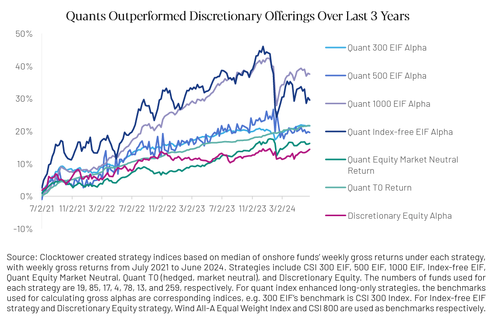
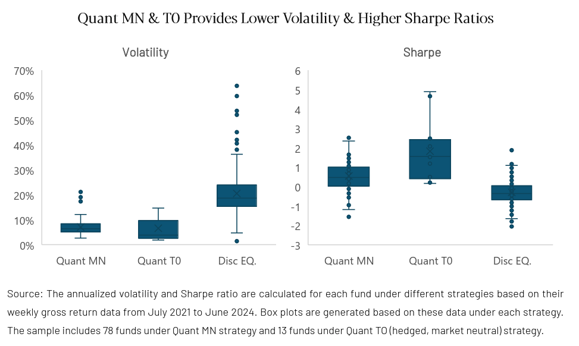
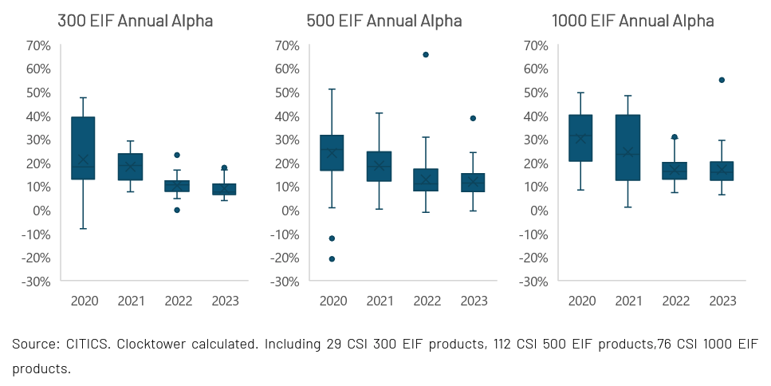
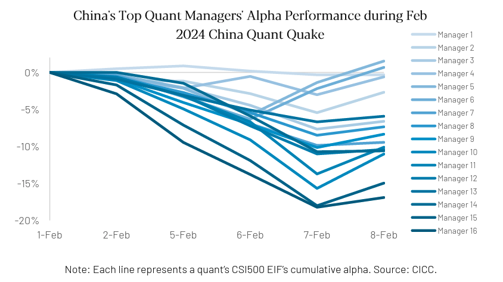

An in-depth examination of the quantitative fund industry in China — its development, unique characteristics, investment considerations, and how AI is shaping the sector.
This paper focuses on the quant fund industry in China. Throughout the following pages, we examine the industry's development, unique characteristics, investment considerations, and how AI is shaping the sector. We begin by providing background on the evolution of global quant funds. We subsequently detail the distinctive features of quant fund strategies in China and the investment implications.
China's quant industry has several distinctive features. For instance, 75% of quant strategies in China are equity-focused, whereas in the United States, CTAs (35%) and quant macro (25%) strategies dominate. In U.S. equity quant strategies, market-neutral approaches are predominant, while in China, enhanced indexing strategies play a major role. High-frequency trading (HFT) in China is also notably different due to trading rules such as T+1 trading, the auction trading system, limited access to shorting and leverage, and a simplified market and exchange structure.
We believe investors should pay close attention to factors such as performance consistency, AUM and growth rates, transparency, risk management, regulatory risks and background checks when investing in China quants. On the surface, these practices are seemingly similar to global investing standards, but there are different items to look out for within each category given the unique investment characteristics, considerations and access mechanisms. To access China's quant hedge fund industry, there are both onshore (within mainland China) and offshore (outside of mainland China) approaches. Onshore, investors can directly invest in domestic quant funds through QFII (Qualified Foreign Institutional Investor) or use brokers' QFII/RQFII (RMB Qualified Foreign Institutional Investor) channels. Offshore, investors can invest in funds using similar strategies or in broker issued index products linked to quant fund performance. Onshore investing typically offers lower brokerage fees, reduced latency, and more trading days, while offshore investing provides easier access to leverage and securities lending. Additionally, beginning in 2018, Chinese quant managers have experimented with machine learning models to replace traditional multi-factor models. Today, the use of AI in quant funds is growing in both China and the U.S., though challenges in implementation remain, given the technology is in its early infancy.
To understand the current landscape, we must first compare China's history to the global quant industry's development across various dimensions, including talent, assets under management (AUM), strategy, alpha richness, regulation and more. China's quant industry began its rapid development in 2010. Despite its late start, the combination of a strong talent pool and significant capital inflows has accelerated growth in recent years. Strategies have become more sophisticated and diverse, fund managers have become more institutionalized, and the scale of quantitative trading has expanded rapidly. However, since 2023, as government regulations on the quant industry have tightened, the industry is entering a new stage marked by high turbulence. We believe it will transition toward standardized development under regulatory oversight. It is expected to further consolidate due to the increasing cost of regulatory compliance. This mirrors the global tightening of regulations following events like the quant quake of 2007 and the flash crash of 2010.
After an initial period of building out theoretical frameworks and models, the global quant industry experienced a period of rapid development from the 1980s to the early 21st century. However, in 2007, a "Quant Quake" occurred due to massive growth in AUM and strategy crowding, which was eventually followed by the global financial crisis in 2008. After several years of adjustments alongside regulatory reform, the global quant industry has recently entered a relatively mature stage.
Source: Clocktower organized information
Source: Clocktower organized information
China's quant development started later than the global market, but it has grown rapidly due to a strong talent pool and significant capital inflows. Many Chinese nationals have secured key roles in the global quant industry. Several China-based quant managers have experience at global institutions like Citadel, Two Sigma, Tower Research Capital and proprietary quant teams at sell-side firms such as Deutsche Bank and UBS. As of Q1 2024, six of the top ten Chinese quant firms have founding teams with overseas experience. Talent that has returned to China has not only strengthened the talent pool but also introduced advanced techniques, further accelerating growth in China's quant industry.
Source: ZIPPIA
The market share of quant hedge funds in China is similar to that in the global market. In China, quant hedge fund AUM accounts for about 27% of the total AUM in the hedge fund industry as of Q3 2023, whereas global quant hedge funds make up around 30% of the total AUM in the hedge fund industry in 2016.
Source: Hedge Fund Research
Source: CICC AM, CITIC Securities, AMAC, simuwang.com
As of November 2023, only around 30 Chinese quant firms had AUM exceeding 10 billion RMB (approximately 1.4 billion USD). This is a relatively small figure compared to leading global quant firms, where AUM typically ranges from 20B to over 100B USD. This is due to several factors, including: a smaller investment universe given a primary focus on the Chinese market, the relatively early stage of industry development, and lower entry barriers. These factors have led to many funds with sub 500 million RMB AUM. China's equity trading infrastructure is state-oriented, centered around two major exchanges located in Shanghai and Shenzhen. This setup limits the advantages of ultra-high-speed trading and reduces the need for the extremely high costs associated with such investments, which allows increased competition from emerging firms entering the market.
Source: Simupaipai
However, as regulatory oversight becomes stricter, smaller funds are facing rising compliance costs. In contrast, larger firms, leveraging their extensive talent pools and advanced facilities, are building strong infrastructure, making it more challenging for smaller firms to catch up. Looking ahead, institutionalized and platform-based leaders are likely to become more dominant. However, we also believe there will still be opportunities for smaller firms with niche strategies.
Source: Clocktower Database (global as of 2024); Guolian Securities (China as of 2024Q1, USDCNY FX 7.2)
Source: AMAC, CITIC Securities (2021) / Aurum (2023.12)
Due to restrictions on short selling, leverage, and the limited availability of financial derivatives, quantitative investing in China is currently concentrated in the equity market, with 75% of strategies focused on quant equities. In contrast, U.S. quant firms operate across a wider range of asset classes and regions. For example, quant macro strategies account for 26% of the U.S. quant market but only account for 4% in China. Similarly, CTA (Commodity Trading Advisor) strategies represent 32% of the U.S. market compared to just 9% in China. Moreover, China's equity market is primarily facilitated through the Shanghai and Shenzhen stock exchanges, while the U.S. has 13 national exchanges and over 300 trading platforms. The diversity in the U.S. market enables a broader array of quant strategies, including cross-exchange arbitrage and dark pool trading.
Quant trading accounts for an estimated 20–30% of Chinese equity market volume, which is lower than the estimated 58% in the U.S. However, stricter regulations and the dominance of auction trading mechanisms in China, limit high-frequency trading and market-making activities, constraining the potential for growth in trading participation. For context, buy-side quant funds in the U.S. contribute only about 17% of the total equity market volume.
Source: TF Securities, Bloomberg Intelligence
From an alpha perspective, the Chinese quant market still offers attractive alpha opportunities. The median annualized alpha of quant enhanced index funds (EIFs) in China was around 14% from 2020 to 2023, which was achieved without any leverage. Due to the lack of data on EIFs in the U.S., we compared the returns of the Quant Equity Market Neutral Strategy index, compiled by the hedge fund research firm Aurum. This strategy index returned an annualized return of only 1.23% between 2020 and 2023, with the use of leverage.
Source: CITICS, Clocktower calculated. Including 29 CSI 300 EIFs, 112 CSI 500 EIFs, 76 CSI 1000 EIFs. Aurum.
In February 2024, China experienced a "Quant Quake," similar to the one in the U.S. in 2007. The tightening of regulations in the Chinese quant industry, with the publication of the "Regulations on Program Trading in Securities Markets", mirrors the post-2008 U.S. regulatory changes (Dodd-Frank Act). Both countries have focused on increasing transparency, improving risk management, and enhanced market surveillance, with China placing a particular focus on regulating high-frequency trading.
China may still lag behind the U.S when it comes to adopting new technologies like AI in quant strategies. Some fund managers have noted that while enthusiasm, acceptance, and usage are higher in China, there is still room to improve and grow in terms of the maturity and complexity of these applications.
Overseas, alternative data is highly valued, including public filings, conference call analyses of listed companies, online sentiment analysis, and ESG information. This data is used to analyze factors like executive sentiment, providing insights that help predict stock movements. In China, however, the use of alternative data remains relatively limited. Price-volume signals are still considered the most effective and efficient sources of alpha, and the high cost of alternative data makes some managers hesitant to invest.
Nevertheless, the growing adoption of AI models and alternative data is expected to be a key direction for the future of quant strategies. This presents an opportunity for Chinese quant funds to develop further and catch up with their global counterparts.
In general, quant investment processes and strategies implemented in China are broadly similar to their global counterparts. The primary differences lie in the specific details resulting from factors such as regulations, market mechanisms, and the availability of financial instruments.
As previously mentioned, 75% of quant strategies in China are equity-focused, while in the U.S., CTA (35%) and quant macro (25%) strategies dominate. This is partly due to the relatively higher alpha potential in China's stock market but also due to China's limited access to a broader range of investment instruments and derivatives available globally, which restricts the diversity of quant strategies compared to the U.S.
Zooming in on the survey data, 80% of China quant investment firms conduct research on A-shares, while 58% research futures. Additionally, 36% of institutions research options and 32% cover bonds. Beyond A-shares, 17% of institutions are involved in Hong Kong stocks research and 13% in U.S. stocks. Notably, the percentage of institutions researching digital currencies dropped from 15% in 2022 to 5% in 2023. Another emerging trend is that 25% of institutions are researching OTC derivatives in 2023.
Source: “2023 China Quant Investment White Paper”
Among U.S. equity quant strategies, market-neutral is the predominant strategy, whereas in China, enhanced indexing strategies play a significant role. In 2021, Enhanced Index Funds (EIFs) represented 39% of quant strategies in China, compared to 33% for market-neutral strategies. The rapid growth in assets under management (AUM) for EIFs in China was largely driven by the bull market from 2019 to 2021. In contrast, the development of market-neutral strategies in China has been constrained by regulatory restrictions on short-selling and leverage. In the U.S., Smart Beta strategies are more common. These strategies are somewhat similar to China's EIFs, and generally offer relatively lower excess returns.

Source: MSCI Barra
Approximately 65% of EIFs use broad-based indices, such as the CSI 300, CSI 500, and CSI 1000, as their benchmarks. Among them, EIFs based on the CSI 500 index are the most popular, accounting for around 45% of the total number of EIFs in China.
Beyond these three indices, the CSI 2000 was introduced in August 2023 to better capture small and micro-cap stocks in the rapidly expanding A-share market, providing more comprehensive and supplementary coverage alongside the CSI 1000 index. Similar indices include the CNI 2000 Index, launched in April 2023, and the Wind Micro-Cap Index, introduced in March 2021. Beginning in 2023, several quant firms launched EIFs based on these micro-cap stock indices.
In addition to broad-based index EIFs, there are other types of EIFs available, there are 'Index-Free EIFs' (which do not track a specific benchmark), 'sector index-based EIFs', and 'leveraged EIFs'. In 2024, many institutions also launched EIFs based on high-dividend indices to keep up with market trends.
Source: Simupaipai as of July 2023. China Quant Investment Quarterly Report – 2023 Fall.
Different indices offer a variety of styles, characteristics, and performance. The CSI 300 Index includes large-cap, value-oriented stocks, concentrated in the finance and consumer sectors. While the CSI 500 Index focuses on mid-cap stocks, with a more balanced industry distribution and market capitalization. The CSI 1000 Index focuses on small-cap and growth-oriented stocks, primarily in the technology and advanced manufacturing sectors. The CSI 2000 Index delves further into micro-cap stocks, characterized by high trading activity, with industry distribution concentrated in the industrial sectors.
| CSI 300 | CSI 500 | CSI 1000 | CSI 2000 | |
|---|---|---|---|---|
| Inception Date | 4/8/2005 | 1/15/2007 | 10/17/2014 | 8/11/2023 |
| Index Futures Listing Date | 4/16/2010 | 4/16/2015 | 7/22/2022 | — |
| Concentration: Top 10 Stocks Weight | 22.39% | 6.09% | 3.48% | 2.37% |
| Avg Daily Volume (CNY) | 228B (32B USD) | 142B (20B USD) | 172B (24B USD) | 210B (29B USD) |
| Annualized Volatility (5Y) | 18% | 20% | 23% | 25% |
| Median Market Cap (B CNY) | 85 | 21 | 9 | 3 |
| Distribution of Market Cap | ||||
| ≥50B CNY (7B USD) | 76.3% | 2.2% | 0.1% | — |
| 10–50B CNY (1.4–7B USD) | 23.7% | 96.0% | 39.1% | 0.5% |
| <10B CNY (1.4B USD) | — | 1.8% | 60.8% | 99.5% |
Source: Wind, as of June 2024
The CSI 300 tends to be more defensive, exhibiting lower volatility, while the others are relatively more aggressive. Over the past five years, the annualized volatility of the CSI 300 has been around 18%, compared to 20% for the CSI 500, 23% for the CSI 1000, and 25% for the CSI 2000. The CSI 500, CSI 1000, and CSI 2000 indices are generally highly correlated, while the CSI 300 tends to exhibit a lower correlation with these indices.
| CSI 300 | CSI 500 | CSI 1000 | CSI 2000 | |
|---|---|---|---|---|
| CSI 300 | 1.00 | 0.84 | 0.75 | 0.69 |
| CSI 500 | 0.84 | 1.00 | 0.97 | 0.92 |
| CSI 1000 | 0.75 | 0.97 | 1.00 | 0.97 |
| CSI 2000 | 0.69 | 0.92 | 0.97 | 1.00 |
Source: Wind
Besides the variation of different indices, the alpha generated from EIFs based on each index varies notably. From 2020 to 2023, the median of annual alpha was approximately 11% for the CSI 300 EIF, ~13% for the CSI 500 EIF, and ~17% for the CSI 1000 EIF. The CSI 300 is dominated by large-cap stocks with extensive research coverage and higher industry and stock concentration, the potential for CSI 300 EIFs to generate alpha is more limited. In contrast, the CSI 500 has a more balanced industry distribution, a larger number of holdings, and lower concentration, creating more opportunities for alpha generation. The CSI 1000 could be even more conducive to generating alpha within quantitative trading strategies, given its dispersed holdings, more balanced industry exposures, higher volatility, and larger trading volumes.
From a tracking error (TE) perspective, the CSI 300 EIF typically has relatively low TE, with a median value of 4.7% from 2020 to 2023. In contrast, the TE for the CSI 500 and CSI 1000 EIFs were relatively higher, around 7.8% and 7.9%, respectively. This discrepancy may stem from the higher proportion of stock selection within the index components for the CSI 300 EIF, as the CSI 300 benchmark imposes stricter constraints, making it challenging to hold significant positions outside the index without deviating from its style. In comparison, the CSI 500 and CSI 1000 EIFs enjoy more flexibility, allowing them to select a greater number of stocks outside their benchmark components while still maintaining alignment with the benchmark. The weight of the CSI 500 component stocks in CSI 500 EIFs dropped from about 65% in 2020 to around 25% in 2023, with increased allocations to small-cap stocks. However, this trend reversed following the China Quant Quake in 2024.
Another common feature across different EIFs is that as competition in the domestic quant industry continues to intensify, the alpha for all EIFs has been gradually decreasing year over year.
| CSI 300 EIF | CSI 500 EIF | CSI 1000 EIF | |
|---|---|---|---|
| 2020 | 18% | 25% | 31% |
| 2021 | 19% | 18% | 23% |
| 2022 | 10% | 11% | 16% |
| 2023 | 7% | 11% | 16% |
| Median | 11% | 13% | 17% |
| Index | TE Median |
|---|---|
| CSI 300 EIF | 4.7% |
| CSI 500 EIF | 7.8% |
| CSI 1000 EIF | 7.9% |
Source: CITICS, Clocktower calculated. Including 29 CSI 300 EIFs, 112 CSI 500 EIFs, 76 CSI 1000 EIFs.
High-Frequency Trading (HFT) generally yields small profits per trade, but its strength lies in the high frequency/volume of transactions, where these small gains can accumulate into substantial profit. HFT thrives in environments with high intraday stock volatility, large market trading volumes, and high liquidity. Different institutions may have slightly different definitions of HFT. Throughout this article, bearing in mind the Chinese market context, we define HFT as follows:
Currently, the China Securities Regulatory Commission (CSRC) classifies a single account as engaging in HFT when it exceeds 300 order submissions or cancellations per second, or more than 20,000 orders in a single day. Fund managers in China can split their orders across multiple accounts to reduce the number of submissions per account, thereby staying below the thresholds set by stock exchanges and circumventing market regulations.
| Source | Definition |
|---|---|
| U.S. Commodity Futures Trading Commission (CFTC) |
|
| U.S. Securities and Exchange Commission (SEC) |
|
| China Securities Regulatory Commission (CSRC) |
|
Source: Clocktower organized
According to estimates from Bloomberg Intelligence, HFT accounts for approximately 50% of the total trading volume in U.S. equities. In China, as reported by the CSRC, HFT accounts for about 20% of the total market volume in 2023. China's current HFT amount is roughly equivalent to U.S. volumes in 2005. However, due to differences in market structure, trading systems, and regulatory frameworks, it is challenging for HFT in China to reach the same proportion of trading volume that is seen in the U.S. today.
Source: TABB Group estimate (before 2012), Bloomberg Intelligence (since 2012)
Unlike the T+0 trading system used in the U.S. and Hong Kong stock markets, China's stock market operates under a T+1 system, meaning stocks purchased on a given day can only be sold the next day or later. As a result, HFT in China requires acquiring base stock positions to enable intraday trading. The base stock positions can be obtained by stock borrowing from brokers or holding stocks directly. For the latter, the simplest choice could be a benchmark index constituent, but in reality, it tends to be more complex and are selected by a quant model. In contrast, U.S. HFT typically concludes the trading day with minimal or no positions.
Due to its intraday trading implementation within the T+1 system, HFT is also referred to as the “Quant T0” strategy in China. In addition to “Quant T0”, there is also “Manual T0”, where trades are executed manually. Manual T0 strategies typically focus on a limited set of stocks, often several dozen specific names, whereas quant T0 strategies can monitor the entire market in real time. Some skilled traders, with a deep understanding of real-time market movement, are able to achieve higher returns than quant T0 strategies.
There are typically two ways to obtain base stock positions for HFT:
In the U.S., the market operates under a market maker system, where high-frequency market-making strategies play a key role in HFT. According to Bloomberg Intelligence estimates, high-frequency market-making strategies account for approximately 60% of all HFT activity. This dominance is largely due to the fragmented market structure, with 10+ exchanges and 50+ dark pools, allowing the same stock to be traded across different venues. The Regulation NMS Act mandates that investors receive the best available price across all exchanges, making the market reliant on market-making strategies to provide liquidity. The primary sources of profit for market makers are exchange rebates and the bid-ask spread.
While in China, the Shanghai and Shenzhen stock exchanges, the main access point for China's A-shares, operate under an auction trading system, where orders are directly matched based on price and time priority among investors through a centralized process. Market makers are not required in this market, and there are no exchange rebates, which are a major source of profit for market-making strategies in the U.S. Additionally, China's regulations on HFT are becoming increasingly strict. High submission and cancellation rates within seconds can trigger regulatory monitoring, potentially leading to guidance or higher transaction fees in the future. This environment makes it difficult to implement market-making strategies that rely on high-speed trading to capture small price differences while avoiding adverse selection. Furthermore, China's T+1 trading system adds further complexity to operations.
Similarly, cross-exchange arbitrage strategies, which involve identifying and profiting from price differences for the same stock across different exchanges, cannot be implemented in China because each company's stock can only be listed and traded on one exchange. Generally, the Shanghai Stock Exchange focuses more on large state-owned enterprises, whereas the Shenzhen Stock Exchange caters to small and medium-sized enterprises as well as tech-driven and innovative companies. This lack of cross-exchange trading prevents the use of such arbitrage strategies.
In China, high-frequency strategies involving excessively frequent order placements and cancellations are restricted, as such activity is considered abnormal trading and is closely monitored. While specific rules around the amount and timing of order placements and cancellations are still being developed, guidelines have been published to limit this practice.
Aside from strategies discussed above, other major HFT strategies, e.g., arbitrage, trend following, reversal, and event-driven strategies in China are similar to the U.S.
| China (Mainly Auction Trading System (or Order-driven Trading System)) | U.S. (Mainly Market-Making System) | |
|---|---|---|
| Definition | System where orders are matched based on price and time priority in centralized exchanges. It is further divided into: Continuous Auction: Suited for intraday trading. Batch Auction: Used to determine opening and closing prices. For example, the Shenzhen Stock Exchange schedule includes: • Opening batch auction: 9:15–9:25 • Continuous auction sessions: 9:30–11:30 and 13:00–14:57 • Closing batch auction: 14:57–15:00 | System where market makers provide continuous buy and sell quotes, ensuring liquidity and facilitating immediate trades. |
| Primary Profit Mechanism | No dedicated market-making profiting mechanism | Market makers can profit from bid-ask spreads, exchange rebates and trade execution advantages. |
| Transparency | There is greater transparency within the market, information is publicly available regarding buyer and seller quotes and transaction details. Dark pools and iceberg orders are not officially available in mainland China. The auction market is fully centralized and transparent, with all orders displayed. To reduce market impact from large orders, similar functions are provided in China: Block Trading Mechanism: Allows large trades exceeding certain thresholds to be conducted on the exchange at specified times, rules, with information publicly displayed. Algorithms: Brokers offer algorithms to split large trades into smaller parts, minimizing market impact. | Lower transparency: market makers have informational advantages over other investors, reducing market transparency. Market makers’ privileged position and greater access to information increases their ability to exploit the market. |
| Liquidity | Variable liquidity depending on auction periods and order accumulation. | High liquidity due to continuous market-making activities. |
| Transaction Costs | Lower transaction costs: Buyer and seller quotes are matched based on specific rules, reducing costs beyond traditional market spreads. | Higher transaction costs: Increased trading costs are part of the profit earned by market makers. |
Source: Clocktower organized
| HFT Strategy | Strategy Description | Feasibility | Reason for Constraints in China |
|---|---|---|---|
| Market Making | Provides liquidity by simultaneously placing buy and sell orders to capture the bid-ask spread. | Implementation of these HFT strategies is constrained in China’s equity stock market | Auction trading system, T+1 rule, and restrictions on excessively frequent order placements and cancellations. |
| Liquidity Detection | Aims to detect and exploit hidden liquidity in the market, such as large orders in dark pools or iceberg orders. | Dark pools and iceberg orders are not officially available in mainland China’s centralized and transparent auction market. However, the strategy can still be adapted by analyzing visible order flows and market depth to detect potential large trades. | |
| Cross-Exchange Arbitrage | Capitalizes on small price differences for the same asset across multiple exchanges. | Each stock is listed and traded on one exchange only. | |
| Momentum Ignition | Attempts to trigger other traders to buy or sell by placing and canceling a series of orders to create artificial price momentum. | Excessively frequent order placement and cancellation are regulated and treated as abnormal trading practices in China. In the U.S., Momentum Ignition and Spoofing are also considered illegal, as they are considered to be market manipulation. | |
| Quote Stuffing / Spoofing | Places a large number of orders quickly to create a false appearance of demand or supply, then cancels them. | ||
| Statistical Arbitrage (Stat Arb) | Uses statistical methods to identify pricing inefficiencies between correlated assets, typically involving mean reversion or co-integration strategies. | Not Constrained | |
| Event Arbitrage | Responds to news events, earnings releases, or economic reports that cause temporary price movements. | ||
| Order Flow Prediction | Analyzes patterns in order flow to predict short-term price movements. | Constrained | Limited by speed constraints and regulatory oversight. |
Source: Clocktower organized
In the U.S., leverage is virtually unrestricted, with some HFT strategies using more than ten times leverage intraday. In China, leverage can be utilized through methods like Direct Market Access (DMA), which historically allowed up to four times leverage. However, as of April 30, 2024, new regulations limit hedge funds use of DMA to a maximum of two times leverage.
In the U.S., major HFT firms and low-latency infrastructure providers are willing to invest tens of millions of dollars to shave off mere fractions of a millisecond in delays, fueling an arms race for speed. For example, Jump Trading spent $14 million to purchase towers solely to reduce data transmission time from 4.25 milliseconds to 4.18 milliseconds.
| Organization | Jump Trading | Spread Networks | Arctic Fibre Inc. | Anova Financial Networks |
|---|---|---|---|---|
| Method | Purchase micro-wave tower from CME data center | Fiber optic cables crossing the Appalachian Mountains directly connecting to the New York Stock Exchange (NYSE) | Submarine fiber optic cables between Japan Exchange Group (JPX) and London Stock Exchange (LSE) | Laser network between NYSE and Nasdaq |
| Cost | $14 million | $300 million | $1.5 billion | Millions of dollars |
| Time Saved | 0.07 ms | 3 ms | 60 ms | 0.18 ms |
| Improvement | 4.25 ms to 4.18 ms | 7 ms to 4 ms | 230 ms to 170 ms | Twice as fast as fiber optics |
Source: Bloomberg, Wikipedia, ExtremeTech, Wall Street Journal, QuantUp
In China, the phenomenon of marginally improving trading speed is less extreme. One reason is that China has fewer exchanges, and each stock can only be traded on one exchange. Additionally, most of the infrastructure is state provided, and various access methods cannot be directly connected to the exchanges. As a result, the steps and costs involved in improving speed in China are far lower than the investments made by large U.S. quant firms.
Currently, the information flow for quant trading orders in China can be divided into following parts:
There are some domestic Chinese companies who complete the entire process in just over 3 milliseconds, while slower companies take about 6 milliseconds. Most of the differences between domestic companies are within a few milliseconds. The difference in the complete loop between firms is often measured in nanoseconds when strategies are relatively simple. Chinese quant firms mainly focus on speeding up the last 3 steps. Some firms work with brokers on optimization, such as low-latency switches, market data servers, trading server optimizations, and dedicated lines setup.
| United States | China | |
|---|---|---|
| Settlement System | T+0 Market-making strategies generally avoid holding positions overnight, though some signals with overnight predictive capability may hold certain overnight positions. | T+1 Investors must hold a base stock position to execute intraday transactions (buying and selling the same stock on the same day). |
| Short-Selling Mechanism | Very few restrictions on short-selling through broker cooperation. | Historically, HFT could use securities lending for short selling, but this practice was banned in 2024. |
| Trading System | Primarily a market-maker system. High-frequency market-making strategies account for 60% of HFT strategies. | Primarily an auction trading system. There are almost no high-frequency market-making strategies. |
| Cross-Exchange Arbitrage | Cross-exchange arbitrage strategies are possible. | Stocks can only be traded on one exchange, so cross-exchange arbitrage is not feasible. |
| Leverage | Leverage is virtually unrestricted. Some HFT strategies finance with leverage of more than ten times intraday. | Leverage can be added through methods such as DMA. Historically, DMA could provide nearly 4 times leverage, but the 2024 guidelines limit DMA leverage to no more than 2 times. |
| Trade Speed Improvements | Major institutions are willing to invest tens of millions of dollars to shave off mere fractions of a millisecond in delays which has fueled an arms race for speed. | China’s market structure is relatively simple and most of the infrastructure is state provided, so improvement measures are less extreme. Therefore, the steps and costs involved in improving speed are far lower in China. |
Source: Clocktower organized
In recent years, HFT has sparked increasing controversy in China's financial markets. Critics argue that HFT firms, leveraging their information and technological advantages, are encroaching on the opportunities and profits of retail investors. Others claim that these firms hold a monopolistic edge in securities lending, creating significant inequity. Regulatory authorities have stepped up efforts to impose tighter restrictions and oversight with regards to HFT in response. For instance, the once popular T0 strategy executed through securities lending is now prohibited by regulators. There are rumors that varied transaction costs for HFT strategies are also potentially on the horizon.
In the U.S., the 2010 "flash crash" was largely blamed on HFT, prompting regulatory bodies to introduce various measures to regulate the market, such as the well-known Dodd-Frank Act. The logic and specific measures taken to regulate HFT practices in China and the U.S. share certain similarities, which will be further explored in the "regulatory risk" section.

Source: Clocktower created strategy indices (median of onshore funds’ weekly gross returns, Jul 2021 to Jun 2024)
In recent years, onshore Quant Equity EIFs have delivered more attractive excess returns compared to discretionary equity strategies. The chart below shows that, over the past three years through June 2024, the excess returns of various quant strategies have outperformed discretionary strategies, despite a pullback in quant alpha at the beginning of 2024.
Additionally, quant market-neutral and quant T0 strategies offer a more stable risk-return profile, with median volatilities of 6.38% and 6.57%, respectively, which is significantly lower than the typical 20.55% volatility of discretionary strategies. Moreover, the median Sharpe ratios of 0.55 and 1.83 are much higher than the -0.39 ratio of discretionary strategies. These options cater to investors seeking to minimize market risk exposure.

Source: Annualized volatility and Sharpe ratio based on weekly gross return data from Jul 2021 to Jun 2024. 78 funds Quant MN, 13 funds Quant T0.
Additionally, quant strategies offer differentiated return sources compared to discretionary strategies. Quant strategies have a broader stock selection, more holdings, and more diversified positions compared to the higher concentration of discretionary strategies. According to estimates from Clocktower's internal database, as of June 2024, the alpha generated by China's onshore quant strategies over the past three years has shown low correlation to the alpha from discretionary strategies, providing a diversification benefit. This helps enhance the variety of strategies within a portfolio and reduces the impact of market volatility.
| Quant Strategy | Correlation |
|---|---|
| 300 EIF Alpha | 0.39 |
| 500 EIF Alpha | -0.26 |
| 1000 EIF Alpha | 0.31 |
| Index-Free EIF Alpha | 0.48 |
| T0 Return | 0.14 |
| EMN Return | 0.34 |
Source: Calculated based on Clocktower created strategy indices
However, due to factors such as increasing AUM, growing strategy homogeneity, fierce competition, style factor reversals, and stricter regulations, the overall alpha of quant strategies has been trending downward in recent years.

Source: CITICS, Clocktower calculated. Including 29 CSI 300 EIF products, 112 CSI 500 EIF products, 76 CSI 1000 EIF products.
Although China's quant market has become more institutionalized in recent years, careful investor scrutiny is still required during the due diligence process. Key considerations:

Source: CICC
The regulatory scrutiny placed on quant trading in China is escalating. Changes in regulatory policies could lead to increased transaction costs and the restriction of certain trading strategies. Since 2023, exchanges have been rolling out a series of regulatory measures targeting quantitative trading, especially high-frequency trading:
The introduction of other regulatory measures has affected certain quantitative strategies, particularly those related to securities lending, such as securities lending Quant T0 strategies:
Additionally, quant market-neutral strategies were major users of DMA leverage, however, a series of new regulations has limited both scale and leverage:
These measures aim to regulate the quantitative trading market and reduce the potential for abnormal shocks to the market, similar to the regulatory actions introduced in the U.S. following the 2010 “flash crash.” In an effort to monitor abnormal trading behavior, the Dodd-Frank Act and the expanded Commodity Exchange Act provided detailed definitions and clear prohibitions on spoofing, layering, and high-speed probing. In addition, flash orders were voted to be banned in 2009. To curb excessive competition and order placements, U.S. exchanges have set minimum order resting times, such as Nasdaq's requirement that an order must remain in place for at least 100 milliseconds before being canceled.
There have been growing calls for the imposition of financial transaction taxes, order fees, or cancellation fees. France introduced a high-frequency trading tax in 2012, set at 0.01%. To enhance information transparency, the SEC implemented the Large Trader Reporting rule in 2011, requiring traders who meet certain criteria to report their trading data, enabling the SEC to track the activities of major market participants. Despite resistance from some large institutions, the SEC developed the Consolidated Audit Trail in the following year to track billions of daily stock and options trades which has helped the SEC catch market manipulators and diagnose market instability. Rule 15c3-5 required brokers and dealers to establish a systematic review process, raising the market access threshold. Additional safeguards, such as circuit breakers, erroneous trade cancellation rules, and bans on orders with no intention of execution, were introduced to further mitigate market volatility.
Overall, the implementation of China's regulatory measures for programmatic trading represents an important step toward the standardized development of the quantitative trading industry, similar to those in developed countries. However, China's tolerance for high-frequency trading and securities lending remains tight compared to developed markets.
Currently, there are two main ways for overseas investors to access Chinese quant strategies:
| Criteria | Onshore Access | Offshore Access |
|---|---|---|
| Brokerage Fees | Lower fees: ~0.01%, significantly lower than offshore fees. Investors can save 2-4% in annual fees with high turnover rates around 100 times per year. | Higher fees: Approximately 0.02%-0.03%, making it more costly, especially for high-frequency strategies that are sensitive to transaction costs. |
| Latency | Lower latency: Faster execution with lower latency, suitable for high-frequency and ultra-high-frequency trading. | Higher latency: Generally, 10-100 ms slower than onshore, affecting high-frequency strategies due to alpha erosion; recent and potential regulatory measures targeting HFT may reduce this impact. |
| Trading Days | More trading days: Not affected by holidays and weather related closures in Hong Kong, offering more trading days annually. | Fewer trading days: Stock Connect trading is subject to both Hong Kong and mainland China holidays and weather related closures in Hong Kong, resulting in around 8 fewer trading days yearly. The government is working on this issue. Trading through QFII with a PB is another solution, though it is generally more expensive. |
| Leverage and Securities Lending | Restricted: Limited options for leverage and securities lending onshore, limiting certain strategy flexibility. | More accessible: Easier to use leverage and access securities lending, favoring leveraged market-neutral and short-focused quant strategies. |
| FX Impact | Simpler FX impact: Only impacted during subscription and redemption periods, allowing investors to choose currency conversion timing. | More complicated FX impact: Real-time FX fluctuations affect offshore investors due to foreign exchange settlements when realizing profits with investment in RMB assets. |
| Capital Inflow Requirement | Funds must enter mainland China: Weather through a QFII license or a broker’s QFII/RQFII channels via swap structure, this approach essentially involves transferring funds into China. | No direct inflow required: Offshore access does not require direct fund inflows into mainland China, providing greater flexibility for capital management. |
Source: Organized by Clocktower
Source: Invesco’s Global Systematic Investing Study 2023
Beginning in 2018, some domestic quant managers in China have been assessing machine learning models as a replacement for traditional multi-factor models. The applications have evolved from basic machine learning models like Lasso and Ridge to more sophisticated neural networks such as Deep Neural Networks (DNN) and Graph Neural Network (GNN). Reinforcement learning is also used to optimize portfolios. A 2021 survey conducted by QuantUp revealed that 10.16% of institutions, including hedge funds, proprietary trading desks, and asset management divisions of securities firms, were utilizing AI in over ten distinct areas throughout the investment research processes, with AI contributing to 30% of their total investment activities.
Typically, in China's quant industry, the larger the company, the greater its investment and enthusiasm towards artificial intelligence. For example, Ubiquant Investment has established a Data Lab, AI Lab, and Waterdrop Lab to explore the applications of AI in data, algorithms, and trade execution. Meanwhile, High-Flyer Capital Management has invested over a billion yuan, purchased 11,000 GPUs, and rented nearly 2,000 square meters of office space to independently develop a deep learning training platform.
According to the "2023 China Quantitative Investment White Paper", 55% of institutions use AI for automated factor discovery and portfolio optimization to support alpha generation. AI can assist researchers in uncovering hidden information within vast datasets, sparking fresh ideas and perspectives, particularly in an environment where strategies are becoming more homogenous. Additionally, AI can help extract relational information between stocks from a model-driven perspective, thereby providing additional insights for return forecasting. Nearly half of the institutions use AI for Natural Language Processing (NLP) and data collection, with many adopting or even developing their own general AI models, such as ChatGPT, to enhance efficiency in tasks like data processing and debugging.
In North America, quant institutions share the same enthusiasm for AI. According to Invesco's "2023 Global Quantitative Investment Research", 90% of institutions believe AI will play an equally or more important role compared to traditional research strategies in the next decade. The proportion of institutions extensively applying AI throughout the research and investment process is similar in both North America and the Asia-Pacific region, at approximately 10%. However, North American institutions use AI slightly less across various processes compared to those in Asia-Pacific. For example, in portfolio optimization and risk management, the usage rates are 39% and 46%, respectively, in North America and Asia-Pacific.
Although AI can assist in generating effective research and has historically aided in achieving solid investment returns, it still faces many unresolved challenges, such as issues related to complexity and interpretability of the models and the quality of available data. Additionally, factors like parameter selection and initial model conditions can significantly impact performance, while common issues like noise and overfitting can greatly reduce prediction accuracy. The high noise and volatility characteristics of financial data further amplify these weaknesses, leading to a decline in the performance of some AI-driven strategies. Many managers have found that AI-driven strategies tend to lose effectiveness faster than traditional ones.
Overall, the application and prevalence of AI in quant markets both within China and the United States is widespread and continues to grow. The future evolution for AI-driven quant strategies is expected to focus on feature engineering, algorithm upgrades, and objective optimization. This will involve incorporating human knowledge, integrating multiple models, and refining optimization for different parameters such as Information Coefficient (IC), Information Ratio (IR), and the Sharpe ratio. As breakthroughs continue in fields like deep reinforcement learning, the long-standing challenges of interpretability and overfitting in complex models in quant strategies may also be addressed.
Quant strategies can be classified based on a variety of dimensions, including trading frequency, market neutrality, asset class focus, strategy logic, and risk exposure. In practice, many quant strategies integrate multiple classifications. For example, an equity quant strategy might use a multi-factor model alongside statistical arbitrage and machine learning for predictive analytics.
| Classification | Category | Description |
|---|---|---|
| Trading Frequency | High-Frequency Trading (HFT) | Algorithmic trading that requires a high-speed trading infrastructure, typically with investment horizon of less than one day |
| Low-Frequency Trading (LFT) | Longer holding periods, potentially days to months, focusing on medium- to long-term signals and fundamental analysis. | |
| Market Neutrality | Market-Neutral | Hedges out market exposure by pairing long and short positions to minimize systematic risk, seeking absolute returns. |
| Directional | Retains exposure to overall market direction, benefiting or suffering from market trends. | |
| Asset Class | Equity Quant | Focuses on equities, using models to optimize stock selection and timing, such as multi-factor models and statistical arbitrage. |
| Fixed-Income Quant | Concentrates on bonds, leveraging interest rate movements, credit spreads, and other factors for returns, including yield spread arbitrage. | |
| Futures Quant | Engages in futures markets, employing strategies like trend-following and cross-commodity arbitrage. Commodity Trading Advisors (CTA) strategies often overlap with Futures Quant strategies. | |
| Multi-Asset Quant | Invests across multiple asset classes (e.g., equities, bonds, commodities, and forex) to achieve balanced allocation and risk management. | |
| Strategy Logic | Multi-Factor Models | Uses multiple factors (e.g., value, momentum, quality) for portfolio construction and timing. |
| Statistical Arbitrage | Capitalizes on statistical relationships between assets, such as mean-reversion and co-integration, to capture price spreads and excess returns. | |
| Trend Following | Takes advantage of market trends using momentum or breakout strategies, profiting from price movements in a specific direction. | |
| Machine Learning | Uses machine learning algorithms to extract complex, non-linear relationships in data, optimizing predictions and trade execution. | |
| Event-Driven | Focuses on specific events (e.g., mergers, dividends, stock buybacks) to capture price movements associated with such events. | |
| Market Making | Provides liquidity by quoting buy and sell prices, profiting from bid-ask spreads, usually reliant on technical and execution speed advantages. | |
| Risk Exposure | Absolute Return | Seeks positive returns regardless of market conditions, often through hedging and arbitrage techniques. |
| Relative Return | Aims to generate returns relative to a benchmark, such as enhanced index strategies or momentum-based strategies. | |
| Organization Structure | Multi-PM Platform | A structure with multiple independent portfolio managers, each managing distinct strategies with separate capital allocations, under centralized risk oversight and capital deployment. |
| Unified Quantitative Framework | An integrated, cohesive structure where all strategies are developed and managed through a unified process, emphasizing collaboration and streamlined operations. |
Source: organized by Clocktower
The Qualified Foreign Institutional Investor (QFII) program is a regulatory framework that allows certain licensed foreign investors to access China's domestic financial markets. Introduced by the Chinese government in 2002, the program was designed to gradually open China's capital markets to international investors while maintaining regulatory oversight. Under the QFII program, approved foreign institutions such as asset managers, pension funds, and insurance companies can invest directly in China's stock exchanges, bond markets, and other financial instruments, within a designated quota. The QFII initiative plays a crucial role in integrating China's capital markets with the global financial system, offering foreign investors greater exposure to China's economic growth while ensuring the stability and control of cross-border capital flows.
The Renminbi Qualified Foreign Institutional Investor (RQFII) program is an extension of China's QFII initiative, introduced in 2011 to further open its financial markets to global investors. Unlike the QFII program, which allows foreign institutions to invest using foreign currencies, RQFII enables qualified foreign investors to use offshore Renminbi (RMB) to invest in China's domestic securities markets, including stocks, bonds, and other financial instruments. The RQFII program aims to promote the internationalization of the RMB by encouraging the currency's use outside China while providing foreign investors with greater access to Chinese assets. It also complements China's broader efforts to attract foreign capital and integrate its markets with the global economy.
RegNMS is a set of rules adopted by the U.S. Securities and Exchange Commission (SEC) in 2005 to modernize and strengthen the National Market System for equity trading. Its main goal is to promote fair competition among exchanges, protect investors, and ensure efficient price discovery. Key elements include the “Order Protection Rule,” which requires trades to be executed at the best available price, and rules governing access to market data and trading venues.
The Dodd-Frank Wall Street Reform and Consumer Protection Act is a U.S. federal law enacted in 2010 in response to the 2008 financial crisis. It aims to reduce risks in the financial system and prevent another crisis by increasing regulation and oversight of financial institutions. Major components include the creation of new regulatory bodies, such as the Consumer Financial Protection Bureau (CFPB) and the Financial Stability Oversight Council (FSOC), and stricter capital requirements for banks. The Act also introduced reforms for derivatives markets, executive compensation, and consumer protection in financial products.
The Financial Stability Oversight Council is a U.S. government body created by the Dodd-Frank Act in 2010. Its primary role is to monitor and identify risks to the stability of the U.S. financial system, particularly those posed by large, interconnected financial institutions. The FSOC is tasked with preventing systemic risks and overseeing non-bank financial firms that could pose a threat to the economy. It has the authority to designate certain firms as “systemically important,” subjecting them to stricter regulatory oversight.
The China Securities Finance Corporation (CSFC) is a state-owned financial institution established in 2011 under the supervision of the China Securities Regulatory Commission (CSRC). Its primary function is to provide financing services to stabilize China's securities market, with a focus on margin trading and securities lending. CSFC ensures market liquidity by lending securities and funds to brokerage firms, enabling them to support margin trading and short selling. It also plays a critical role in market stabilization during periods of volatility by injecting liquidity and purchasing large volumes of stocks. As a key regulatory tool, CSFC helps manage financial risks and maintain the overall stability of China's capital markets.
“Private securities fund managers” in China are equivalent to the West's “hedge fund managers,” but reflect how the industry is still in its early stages. “Private” differentiates them from “public” (mutual) funds; China's public fund industry began around 1998, while the private fund industry was not officially formalized until 2004. “Securities” differentiates them from “Private Equity” (PE) as they primarily invest in publicly traded securities. We use “hedge fund” and “private fund” interchangeably in the article.
The Commodity Exchange Act (CEA) is a U.S. federal law enacted in 1936 that regulates the trading of commodity futures and options markets to ensure market transparency and prevent fraud, manipulation, and abusive practices. It provides the legal framework for oversight by the Commodity Futures Trading Commission (CFTC), which enforces the Act's provisions. The CEA mandates registration of market participants and establishes rules to prevent market manipulation and promotes transparency through reporting and record-keeping requirements. It also protects investors and was significantly expanded by the Dodd-Frank Act in 2010 to include oversight of swaps and other derivatives.
The Consolidated Audit Trail (CAT) is a regulatory system established by the U.S. Securities and Exchange Commission (SEC) to track and record all trading activity in the equity and options markets. It creates a centralized database that captures detailed information on orders, quotes, and trades across multiple exchanges and market participants. The CAT was developed to enhance market transparency, improve oversight, and help regulators detect market manipulation or unusual trading patterns. It was introduced following the 2010 “Flash Crash” to address gaps in monitoring fragmented markets and to better protect investors.
Rule 15c3-5, also known as the Market Access Rule, is a regulation implemented by the U.S. Securities and Exchange Commission (SEC) in 2010 to ensure that broker-dealers providing direct market access to clients have robust risk management controls in place. The rule requires broker-dealers to implement pre-trade risk controls, such as monitoring for compliance with financial and regulatory requirements, and to set credit and capital limits for clients. It also mandates that broker-dealers maintain control over their trading infrastructure to prevent market disruptions from erroneous trades or excessive risk exposure. The rule aims to enhance market stability and prevent systemic risks.
The DMA (Direct Market Access) model emerged in 2021 and essentially functions as a type of leveraged total return swap business conducted by Chinese securities firms, which has been widely used in quantitative market-neutral strategies in recent years. Historically, this model allowed for up to four times leverage. However, as of April 30, 2024, new regulations limit hedge funds using DMA to a maximum of two times leverage.
Here's a simplified example to understand how it works:
Assuming the strategy generates a 1% profit after all fees today, the custodian will provide an updated valuation showing that the DMA product has gained 4%.
A quant strategy uses mathematical models, statistical analysis, and computer algorithms to identify and execute trades. By analyzing large datasets, such as historical prices and financial metrics, these strategies aim to uncover patterns or inefficiencies in the market. Quant strategies are automated, allowing for rapid execution and minimizing human intervention.
It refers to a type of quant strategy that aims to closely track the performance of a traditional index, such as the CSI 500 index, while seeking to outperform it through a quant model. Unlike pure index funds, which strictly replicate the index, EIFs adjust the portfolio composition—such as by overweighting certain sectors or securities—to generate excess returns (alpha) while maintaining relatively low tracking error.
A broad-based index is a financial index that represents the performance of a wide cross-section of the market. It typically includes a diverse range of securities across various industries and is designed to reflect the overall movement and health of the economy. Examples include the S&P 500, which tracks large-cap U.S. companies, and the MSCI World Index, which measures global equity market performance. EIFs that use a broad-based index as a benchmark are called Broad-based index EIFs. In addition to broad-based index EIFs, there are other types such as Index-Free EIFs (which do not track a specific benchmark), EIFs with sector or theme indices.
It operates like traditional EIFs but doesn't track any specific index. It selects stocks from the entire market, unconstrained by any index's components, industry, or style exposure, aiming to achieve higher excess returns relative to the overall market or high absolute returns.
Leveraged EIFs are designed to achieve higher alpha through various leverage methodologies, including but not limited to Direct Market Access (DMA) and EIFs plus index futures structures.
It is a quant strategy focused on “market neutrality” that typically involves taking both long and short positions, balancing them so that the overall portfolio has little to no correlation with market direction. Profits are driven by the relative performance of selected assets, aiming to generate consistent returns regardless of market conditions.
It is a quant strategy that takes both long and short positions, enabling it to potentially profit in both upward and downward markets. This approach also incorporates risk management techniques to reduce exposure to market volatility, aiming for returns that are less correlated with overall market trends. Unlike Quant Equity Market Neutral strategies, Quant Equity Long/Short strategies are not necessarily market-neutral, offering greater flexibility to capitalize on market opportunities.
CTAs (Commodity Trading Advisors) take primarily directional positions in index level or macro instruments, such as futures or FX contracts, in a systematic fashion. Technically, a CTA is a trader of futures contracts as defined by the CFTC and historically, there were many CTAs who were not systematic; such traders are more likely to be classified as 'Global Macro'. CTAs are typically extremely systematized with straight through processing from signal generation to execution. Many, but by no means all, CTAs are trend following (using historical prices to determine predictable 'trending patterns') buying into markets where prices are rising and selling where markets are falling. When rising markets slow down/stop rising, trend-followers typically reduce their position and will eventually reverse its position into a short position, which it will hold until the market starts to rally again. The strategy is known for running with profits and cutting losses. Other models used in CTAs may include carry, seasonality, mean reverting or pattern recognition systems, models driven by fundamental data or non-traditional data sources. Some CTAs can also trade very short-term signals driven by market microstructure anomalies and patterns.
It is a systematic approach to Global Macro, with managers taking positions in global markets based on quantitative analysis, taking in information based primarily on economic data, but also incorporating price-related information. The strategy is highly data and technology intensive. The positions tend to be relative value based, but they may also take directional positions in instruments such as futures, FX and baskets of equities, ETFs, swaps and other instruments. Signals may be arranged into relative value asset class models, cross asset class models / directional trades. Signals are also often classified under a number of factor headings: value, carry, momentum etc.
Hedge fund risk premia products typically seek to capture the fundamental insights of a class of hedge fund strategies (hedge fund risk premia / alternative risk premia) along with a meaningful proportion of the expected returns those strategies can earn – using a dynamic but clearly defined process. Funds typically have exposure to a well-diversified portfolio of hedge-fund premia. Premia can cover everything from equity premia (Equity market neutral – trading across value, quality, growth and momentum factors, as well as EM premia), macro premia (e.g., trend following, or EM premia), to arbitrage strategies (e.g., risk arbitrage – holding a portfolio of merger targets diversified by sector and deal type; convertible arbitrage, etc.). The strategies are typically very well understood, backed up by academic research and implemented systematically.
Statistical arbitrage funds typically take price data and its derivatives, such as correlation, volatility and other forms of market data, such as volume and order-book information to determine the existence of patterns. These patterns can help the manager forecast the future return of a stock, often over a relatively short timeframe. Typical signal types are mean-reversion, momentum and event-driven. Mean-reversion looks to take advantage of the phenomenon of short-term price movements occurring due to supply/demand imbalances then moving back to an equilibrium level. Momentum models look for patterns in price data that suggest that price movements will be more persistent (i.e., trend). Other statistical arbitrage funds will look to incorporate more discrete information into their process from events (e.g., publishing of analyst earnings estimates, news flow, etc.). whilst statistical arbitrage funds tend to focus more on 'technical' models. some may also incorporate some longer-term models that are driven by fundamental data (e.g., stock value models, growth, etc.), however, if these models are the more dominant driver of risk, then the fund is likely to be classified as Quantitative Equity Market Neutral. Statistical arbitrage funds are typically run with a very low level of beta and are market neutral, however, this may not always be the case, with some funds able to take significant directional risk; however, given the higher frequency trading nature of such funds, they are not expected to have significant correlation to markets over time.
Smart beta is an investment strategy that combines passive and active approaches by using alternative weighting schemes and factors, such as value, momentum, or low volatility, to select and weight assets in a rules-based manner. Unlike traditional passive strategies that track market-capitalization-weighted indices, smart beta aims to enhance returns, reduce risk, or improve diversification by capturing specific market inefficiencies or risk premia. It typically offers a cost-efficient, systematic approach that lies between fully active management and pure passive investing.
The CSI 300 Index selects the top 300 Chinese A-share stocks by market capitalization, favoring large-cap, value-oriented stocks with more stable profitability. The industry distribution is concentrated in the finance and consumer sectors. The index is more concentrated, with the top ten constituent stocks accounting for over 20% of the total weight of the CSI 300 Index, as of June 2024.
The CSI 500 Index comprises the Chinese A-share stocks ranked from 301st to 800th by market capitalization, focusing on mid-cap stocks. The industry distribution and market capitalization are more balanced, therefore EIFs based on the CSI 500 index are the most popular, accounting for around 45% of the total number of EIFs as of July 2023.
The CSI 1000 Index includes Chinese A-share stocks ranked from 801st to 1800th by market capitalization, focusing on small-cap stocks. The industry's concentration is primarily in technology and advanced manufacturing sectors. The combined weight of the top ten constituent stocks accounts for only 3% of the entire index, as of June 2024.
The CSI 2000 Index includes Chinese A-share stocks ranked from 1801st to 3800th by market capitalization. It was introduced in August 2023 to better capture micro-cap stocks in the rapidly expanding A-share market, providing more comprehensive and supplementary coverage alongside the CSI 1000 index. The industry distribution is concentrated in the industrial sectors, with the top ten constituent stocks comprising only 2.4% of the index weight, as of June 2024.
Source: Clocktower Group
Unlike the T+0 trading system used in the U.S. and Hong Kong stock markets, China's stock market operates under a T+1 system, meaning stocks purchased on a given day can only be sold the next day or later. Therefore, HFT in China is also called the “Quant T0” strategy. In addition to Quant T0, there are Manual T0 strategies, which are executed manually by traders and are not considered HFT.
A “dark pool” is a private financial exchange where institutional investors trade large volumes of securities, such as stocks, without public visibility until after the trades are completed. Unlike traditional stock exchanges, dark pools offer anonymity, reducing market impact by allowing large trades to be executed without affecting the stock's price. These off-exchange platforms are used to minimize the potential for price fluctuations that can occur when large orders are disclosed to the public. However, they have faced criticism for their lack of transparency and potential to undermine market fairness.
A DNN is a type of artificial neural network with multiple layers between the input and output layers. It is called “deep” because it has more than one hidden layer, allowing it to model complex, non-linear relationships in data. DNNs are commonly used in tasks such as image recognition, natural language processing, and more. The layers of a DNN consist of neurons, which are connected to each other, passing information forward and learning from data through techniques like backpropagation.
A GNN is a neural network specifically designed to work with graph-structured data. In a graph, data points (nodes) are connected by edges, representing relationships or interactions. GNNs are used for tasks where data is naturally represented as graphs, such as social networks, molecular structures, transportation systems, and recommendation engines. GNNs capture the dependencies between nodes and can learn node representations, enabling predictions and insights based on graph data.